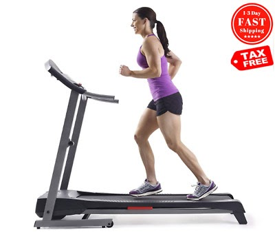

Welcome to Tipos de ejercicios de piernas
10 ejercicios para fortalecer glúteos y piernas (en casa) | Vogue España
2021.06.22 15:36Skip to main content Edición España Arabia Australia Brasil Britain China Czechoslovakia Germany Greece Hong Kong India Italia Japan Korea México Nederland Paris Polska Portugal Russia Singapore Taiwan Thailand Türkiye Ukraine United States Suscribirse Open Navigation Menu Moda Belleza Living Pasarelas Celebrities TV Novias Vogue 365 Compras Business Vogue Shop FITNESS
Los 10 mejores ejercicios para fortalecer glúteos y piernas (en casa)
Esta es la tabla ilustrada diseñada por una entrenadora personal que vas a querer hacer para tonificar estas zonas del cuerpo
Por Ana Morale s
13 de abril de 2020Nos hemos entregado a las bondades del yoga en casa . A todo lo bueno que tiene la plancha abdominal (con permiso de los abdominales tradicionales). A las clases online (vía Youtube o Instagram) que más se parecen a las del gimnasio. A las apps de fitness (incluida la de Elsa Pataky y Chris Hemsworth ) que nos permiten seguir entrenando y hacer un seguimiento de nuestros procesos. En este peregrinaje de fitness casero, era justo y necesario hablar de los ejercicios que mejor funcionan a la hora de trabajar dos de las zonas de nuestro cuerpo que más peticiones atesoran para ser tonificadas: glúteos y piernas . Porque ejercicios para fortalecer estas zonas hay muchos –las sentadillas y el hip trust gozan de buena fama–pero no todos son aptos para ser practicados en casa por nuestra cuenta.
Además, si tenemos en cuenta que, tal y como confirman los expertos, solemos cometer errores bastante comunes durante el entrenamiento de glúteos que nos impiden ver resultados –no saber activarlos, hacer cardio al principio de la sesión o no tomar suficientes proteínas son algunos de ellos–, parece justo y necesario tener clara la hoja de ruta a seguir cuando queramos hacer ejercicios de glúteos en casa .
Sandra Lordén ( @sandralorden ), entrenadora personal y experta en nutrición deportiva, ha elaborado para Vogue.es la tabla definitiva con 10 ejercicios para fortalecer glúteos y piernas que sí podemos hacer en casa, tengamos el nivel que tengamos. Están algunos de los más tradicionales y más efectivos –el poder de la sentadillas es incuestionable–.
Para realizar todos los ejercicios y adaptarlos a tu nivel de entrenamiento, es necesario seguir las indicaciones de este cuadro en cuanto a número de repeticiones, tiempos de descanso (entre series y ejercicios) y cargas.
Isabel Acerete/CN Studio#1. Sentadilla
Isabel Acerete/CN Studio Desde la posición de pie, mirada al frente con pies abiertos a la anchura de los hombros y puntas ligeramente hacia afuera. Baja con la espalda recta y sacando ligeramente el culo hacia afuera, flexionando la cadera y rodillas unos 90 grados, aproximadamente. Después, vuelve a la posición inicial. Los brazos pueden extenderse hacia adelante para ayudarte en la ejecución.
Recomendaciones
Mantén la espalda siempre recta.
Durante la flexión de cadera las rodillas no deben rebasar la altura de las puntas de los pies.
Para aumentar la dificultad puedes incluir peso en su realización, ya sea con una barra, mancuerna o banda de resistencia elástica.
#2. Zancadas alternas
Isabel Acerete/CN Studio Desde una posición de bipedestación, da un paso largo hacia adelante hasta que la rodilla de la pierna trasera tenga contacto con el suelo. Vuelve a la posición inicial e intercambia el pie que avanzas.
Recomendaciones
Haz un descenso en un plano vertical con la espalda recta.
Intenta bajar suavemente hasta que tu rodilla trasera conecte con el suelo.
La rodilla de la pierna de delante no debe sobrepasar la altura del pie.
Para añadirle dificultad se pueden utilizar mancuernas o pesos a los lados de las manos.
#3. Puente de glúteo
Isabel Acerete/CN Studio La posición inicial es tumbada boca arriba con las piernas flexionadas y los pies apoyados en el suelo. Desde aquí eleva la pelvis despegando los glúteos del suelo hasta tener el cuerpo alineado.
Recomendaciones
Mantén el cuerpo bien alineado (pelvis, tronco y hombros).
Desciende suavemente.
Para añadirle dificultad se puede realizar de manera unilateral, apoyando solo una de las piernas.
#4. Peso muerto
Isabel Acerete/CN StudioLa posición inicial será en bipedestación, con las piernas un poco más abiertas que la anchura de los hombros. Coloca el objeto que vayas a levantar del suelo en medio de las piernas (puede ser una pesa, una botella de agua, una mochila con libros ). Comienza a bajar las piernas con el pecho mirando al frente, lanzando el glúteo ligeramente hacia atrás (como si quisieras sentarte) y tratando de bajar con la espalda lo más recta posible. Con ambas manos a la vez, agarra el objeto con fuerza y tira hacia arriba. Hazlo usando la fuerza de las piernas y la espalda, evitando que los brazos participen en este movimiento.
Recomendaciones
Mantén la espalda siempre recta.
Saca pecho y no encorves los hombros hacia adelante.
Durante la flexión de cadera, las rodillas no deben rebasar la altura de las puntas de los pies.
#5. Zancada lateral
Isabel Acerete/CN StudioLa posición inicial es de pie, con la espalda recta, mirada al frente y los pies apoyados en el suelo. Después, desplaza de forma horizontal una de las piernas (puedes hacerlo deslizándola por el suelo o levantándola). La pierna que se desplaza debe quedar completamente estirada, mientras que la pierna de apoyo permanecerá en una flexión de 90 grados. Recoge la pierna desplazada volviendo a la posición inicial.
Recomendaciones
Coloca los brazos mirando al frente para mejorar la estabilidad cuando tengas que realizar el movimiento.
La rodilla de la pierna de apoyo no debe sobrepasar la punta del pie.
#6. Step-up alterno (o subidas al cajón)
Isabel Acerete/CN StudioLa posición inicial será la de bipedestación frente a una superficie más alta (puede ser una escalera, un cajón, una silla o un banco). Primero despega una pierna del suelo hasta apoyarla en la superficie más alta. Después, la pierna que permanecía en el suelo, se despegará para colocarse al lado de la otra en la superficie más alta. Finalmente, la vuelta a la posición inicial se hará a la inversa, de tal manera que esa misma pierna que ha sido la última en subir regresará de nuevo al suelo y después le seguirá la otra. Y la siguiente repetición se empezará con la pierna contraria para alternarlas.
Recomendaciones
Empieza por una superficie más baja hasta que consigas dominar la técnica y después puedes ir aumentando la altura.
Mantén la espalda recta en todo momento.
La pierna de apoyo en la silla debe colocarse a 90 grados, sin que la rodilla sobrepase la punta del pie.
#7. Frog pump
Isabel Acerete/CN StudioTúmbate boca arriba sobre el suelo, colocando las plantas de los pies unidas empujándose la una contra la otra, de tal manera que las rodillas caigan hacia los lados (simulando la posición de una rana). Desde esta posición eleva el glúteo hacia arriba sin perder la linealidad del tronco. Desciende hasta la posición inicial.
Recomendaciones
Es importante elevar la cadera del suelo de manera bien abierta, subiendo y bajando sin despegar los pies.
No despegues la parte superior de la espalda en ningún momento.
#8. Patadas de glúteo en cuadrupedia
Isabel Acerete/CN StudioLa posición inicial es en cuadrupedia, con rodillas y manos apoyadas en el suelo. Coloca las manos abiertas a la anchura de los hombros y las rodillas rectas, justo debajo de las caderas. Empieza primero con una pierna, manteniendo la rodilla doblada a 90 grados y elevando la pierna hasta que esté al nivel de la cadera. Después baja la rodilla hasta llegar casi al suelo y repite el movimiento. Una vez que hayas completado las repeticiones con una pierna, cambia y repite lo mismo con la otra pierna.
Recomendaciones
Es muy importante que la columna esté recta de manera que el cuerpo forme una línea que vaya de los hombros a las caderas.
Procura mantener los hombros abajo y separados de las orejas durante todo el ejercicio.
Se debe meter el estómago hacia dentro y contraer el abdomen durante el ejercicio.
#9. Abducción patada lateral
Isabel Acerete/CN StudioLa posición inicial es tumbada sobre un costado con las piernas totalmente extendidas, una encima de la otra. Eleva la pierna de encima hacia arriba unos 45-70 grados aproximadamente (hasta llegar al punto de máxima contracción glútea, sin que se produzca una flexión de la columna). Después vuelve a la posición inicial –sin dejar que se apoye del todo la pierna sobre la de abajo– y vuelve a repetir la ejecución. Cuando termines las repeticiones realiza lo mismo con el otro costado.
Recomendaciones
Si sostienes dos segundos la pierna elevada, concentrarás aún más el trabajo de fuerza sobre las piernas.
Puedes colocar una banda elástica o un peso sobre la pierna de arriba para aumentar la carga de trabajo.
#10. Patada de abductores
Isabel Acerete/CN StudioLa posición inicial es tumbada sobre un costado. La pierna inferior deberá permanecer estirada, sin tocar el suelo, mientras que la superior estará flexionada y servirá de apoyo contra el suelo. Una vez colocada en la posición inicial, sube y baja dinámicamente la pierna inferior.
Recomendaciones
Si te incomoda la posición natural del brazo del costado apoyado, puedes colocarlo estirado o doblar el codo y apoyar la cabeza de él.
Es importante mantener una posición neutral de la columna en todo el rango del movimiento.
Más en Vogue
Moda Belleza Living Pasarelas Celebrities TV Novias Vogue 365 Compras Business Vogue ShopCondé Nast España
Glamour Vogue Vanity Fair Traveler GQ AD Quiénes somos Condiciones de uso Política de privacidad Bases legales de concursos Gestión Medioambiental Publicidad Política de cookies Instrucciones Adblocker Newsletter Suscríbete a Vogue Política de afiliación No deseo compartir mi información personal© 2021 CONDENET IBERICA S.L. Todos los derechos reservados.
Select international site España Arabia Australia Brasil Britain China Czechoslovakia Germany Greece Hong Kong India Italia Japan Korea México Nederland Paris Polska Portugal Russia Singapore Taiwan Thailand Türkiye Ukraine United States